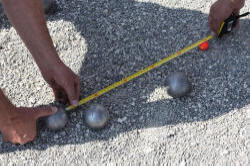

Assessing speaking skills

This guide assumes:
- That the best way to test speaking ability is to get the learners to speak.
- What we need to assess is communicative ability in spoken language.
These are obvious starting points. We can, of course, also test some underlying skills discretely. For example, we can test learners' abilities to produce the sounds of English adequately or to recognise turn-taking signals and so on. Here, however, we will set out an assessment procedure which includes, rather than separates out, those abilities.
 |
The aims of the teaching programme |
All assessment starts (or should start) from a consideration of
the aims of instruction.
For example, if the (or one) aim of a language course is to enable
the learners to do well in the oral interaction part of a Cambridge
First Certificate examination,
then this will be very influential in terms of the types of
assessment tasks we use and the way in which we measure performance.
If, on the other hand, our aim is to enable the learners to
transact and interact
successfully in an English-speaking environment (such as a social or work environment) then we will set different kinds
of assessment tasks and measure performance against different
criteria.
There are, however, some underlying principles in the area which are generally applicable regardless of the aims of the teaching programme.
 |
Three basic tenets |
- We have to use assessment tasks which properly reflect the kinds of speaking the learners will need to be able to do in 'the real world'.
- We need to design tasks which accurately show the learners' ability.
- We need to have a reliable way to score the learners' performance.
These three factors are to do with ensuring reliability and
validity. For more on those two concepts, see
the guide to testing, assessment and evaluation.
The rest of this guide assumes basic familiarity with the content of
that guide.
Fulfilling all three criteria adequately requires a little care.
 |
Getting the full picture |
The first step is to set out exactly what speaking skills are the object of the teaching programme. To do this, we have to answer these 3 questions (which come with a few examples of the kinds of answers we might get):
- What sorts of settings will our learners need to be able to
act in?
- Informal social chatting (interaction)
- Formal or semi-formal meetings at work (transaction)
- Academic settings and seminars (transaction)
- Service encounters?
- Giving formal presentations in a work or academic setting?
- What functions do the learners need to be able to perform?
- Expressing: thanks, needs, opinions, attitude, apology, complaints, justifications etc.?
- Narrating sequences of events?
- Explaining: processes, reasons, procedures?
- Providing: information, directions, instructions, advice etc.?
- Eliciting: information, directions, clarification, help, permission, comment etc.?
- What topics will our learners have to be familiar with?
- Social matters?
- Dealing with officialdom?
- Service providers?
- Entertainment and leisure?
- Travel arrangements?
- Personal experiences?
- The media?
- Medical matters?
- Specific study subjects?
- Specific occupational areas?
When we have the answers, we can go on to considering the best sorts of tasks to set. Without adequate answers, it is pointless to proceed at all.
 |
A general speaking-skills check-list |
It may be the case that you find yourself teaching General
English rather than English for Specific Purposes (also known as
ENAP [English for No Apparent Purpose]). If that is so, you
need a general-purpose check-list of abilities at various levels
against which to assess your learners' abilities to speak.
Here's one:
The abilities and text types are, of course, cumulative.
At, e.g., B2 level, a learner should be able to handle everything
from A1 to B1 already.
 |
Designing tasks |
Now we know what sorts of thing we want to assess, the purposes
of the speaking, the functions the learners need to be able to
perform and the topics they need to deal with, we can get on and
design some assessment procedures.
Again, there are some generic guidelines for all tasks, whatever the
answers to the 3 questions are.
If you have followed the guide to testing, assessment and
evaluation (see above), you will know that this is something of a
balancing act because there are three main issues to contend with:
- Reliability:

A reliable test is one which will produce the same result if it is administered again (and again). In other words, it is not affected by the learner' mood, level of tiredness, attitude etc.
This is a challenging area in the case of assessing speaking. We need to gather as much data as we can but asking learners to speak lengthily, especially at lower levels of ability will result in tiredness and a fall-off in performance. Speaking in a foreign language is tiring and difficult. Adding the stress of assessment to it makes matters worse.
To ensure that a speaking test is reliable, then, we need to set as many short tasks as we can over a period of days or even weeks targeted at assessing the abilities we have identified.
The type of marking that is required also plays a role here: the more subjective the marking is, the less reliable will be the test. If the assessor is required to perform multiple functions (interlocutor, assessor, participant etc.) then reliability of judgement is compromised. - Validity:

Three questions here:- does the test measure what we say it measures?
For example, if we set out to test someone's ability to participate in a discussion for academic purposes, do the test items we use actually test that ability or something else? - does the test contain a relevant and representative sample
of what it is testing?
For example, if we are testing someone's ability to take part in everyday interactions, does the task we set get them to deploy the sorts of language they actually need to do that? - do we have enough tasks to target all the skills we want
to assess?
For example, if we want to test the ability to summarise information orally, do we have a task focused explicitly and discretely on that skill?
- does the test measure what we say it measures?
- Practicality:

Against the two main factors, we have to balance practicality.
It may be advisable to set as many different tasks as possible to ensure reliability and to try to measure as many of the skills as possible in the same assessment procedure to ensure validity but in the real world, time is often limited and concentration spans are not infinite.
Practicality applies to both learners and assessors:- for learners, the issue is often one of test fatigue.
Too many tests over too short a time may result in learners losing commitment to the process.
On shorter courses, in particular, testing too much can be perceived as a waste of learning time. - for the assessors, too many time-consuming tests which need careful assessment and concentration may put an impractical load on time and resources. Assessors may become tired and unreliable.
- for learners, the issue is often one of test fatigue.
 |
Examples may help |
Say we have a short (150-hour) course for motivated B2-level
learners who will need to operate comfortably in an English-speaking
culture where they will live and work.
They need to interact with colleagues and be members of the society.
We have around three hours of the course earmarked for this
assessment.
What sorts of items could we include, bearing mind reliability,
validity and practicality?
Evaluate the following ideas, based on these principles and then
click on the
 to reveal some comments.
to reveal some comments.
|
Interview each learner separately, touching on general social interaction and on work-specific topics |
Negatives:
On the positive side:
|
|
Set up a series of role plays in which candidates have to interact with peers to:
|
Negatively:
On the positive side:
|
Record a number of spoken stimuli to which all learners
must respond on the basis of data they are given and record
their answers for later evaluation. For example:
|
Negatively:
On the positive side:
|
Designing anything in life involves striking a balance between competing priorities.
The kind of evaluative thinking that you have used here can be applied to any kind of assessment procedure, regardless of topic, level and task types.
 |
Other speaking assessment task types |
It may be that your circumstances allow for very simple
speaking
tasks such as those requiring the learners to respond spontaneously
to a set of prepared initiations. This kind of test can be
done in the classroom or a language laboratory or even on the
telephone.
Those are all legitimate
tasks providing the task type and content suits the purposes of
assessment.
There are other ways.
No list can be complete, but here are some other ideas for other
ways to set writing tasks for assessment purposes. The
content of any task will of course, depend on all the factors
discussed so far.
- Form filling tasks

The assessor / interlocutor plays the role of helpful clerk eliciting the data needed to fill in a form on the telephone or face to face.
Such tasks are almost infinitely variable in terms of the level of detail which can be demanded and useful for assessing the learners' ability to provide extra information or require clarification. - Compare and contrast tasks
Presenting people with two different but similar pictures can be a useful way of testing the ability to compare and contrast things in speaking. Such tasks also test the ability to describe what you see (although that is arguably not a commonly required, real-world skill).

- Charts and tables

Getting people orally to describe or summarise data from charts and tables, identify trends and locate significant factors orally is a useful way to test some higher-level speaking abilities. It is actually quite challenging and we need to give the subject adequate preparation time. - Simple graphics and picture sequences

Images of events are useful ways of testing the ability to describe and/or speculate in speaking.
Series of related pictures can be used to assess the ability to produce a convincing recount and obscure or odd-angle pictures can elicit speculative language. - How to ... stimuli
Requiring people to explain how something is done or how something happens is a good way to test the ability to sequence an instruction or to explain and describe processes. They need, of course, to have the data to start with and that's not always easy to supply. Diagrams of processes (as in operating manuals) can be supplied. - Role plays

Are almost infinitely variable in terms of topics, functions required and levels of formality used. They can be very finely targeted.
Role plays can be conducted between two learners or with the assessor or with a third person who has no assessment role at all. The problem with this kind of assessment is that a learner's performance may well be influenced by the performance of the partner and a number of cultural factors may play a significant part. From certain cultures, for example, young females may not wish to appear more knowledgeable than older males and so on. - Prepared presentations

These are poor ways to test speaking ability in general because too many variables (audience size, personality, nervousness etc.) come into play but if it is a skill the learners will need in English, then it a clear and direct way of testing the ability to do it.
|  |
Measuring outcomesIf you can't measure it,
you can't improve it |
Unless you have a clear way of measuring outcomes, all the work on assessment task design is wasted. Ways of getting clean data are discussed in the guide to assessment in general. For speaking in particular, however, there are some conventional approaches which fall into two broad categories.
- holistic assessment
- This involves a simple scale, perhaps from 1 to 10, on which
the product from each learner is placed on an impression of how
well they achieved the task(s).
With a small group and with assessors who have a clear idea of what they are looking for, it can be quick, reasonably accurate and efficient.
There are obvious drawbacks in that judgements can be subjective and speaking tests are not usually recorded (so double or even triple marking cannot be used). It lacks clear criteria against which learners' performances are being measured. - analytic assessment
- Involves breaking down the tasks and being specific about
the criteria you are using to judge success.
Large-scale examining boards use this approach as a matter of course. For example, the current assessment criteria for the IELTS examination stretch across 10 bands of ability and fall into 4 assessment criteria groups. These are:
Fluency and coherence
Lexical resource
Grammatical range and accuracy
Pronunciation
The detail is available from:
https://takeielts.britishcouncil.org/sites/default/files/IELTS_Speaking_band_descriptors.pdf
Here's an example of one level of achievement (Band 7):
Band Fluency and coherence Lexical resource Structural resource Pronunciation 7 - speaks at length without noticeable effort or loss of coherence
- may demonstrate language related hesitation at times, or some repetition and/or self-correction
- uses a range of connectives and discourse markers with some flexibility
- uses vocabulary resource flexibly to discuss a variety of topics
- uses some less common and idiomatic vocabulary and shows some awareness of style and collocation, with some inappropriate choices
- uses paraphrase effectively
- uses a range of complex structures with some flexibility
- frequently produces error-free sentences, though some grammatical mistakes persist
- shows all the positive features of Band 6 and some, but not all, of the positive features of Band 8
No, nobody know the difference between what the writers of this
call connectives and what they call discourse markers. The
latter term should be used to refer to how speakers manage spoken
discourse but the term is so overused and so loosely used that it
has had most of the meaning bleached out of it.
Taking a ready-made set of criteria from a public
examination body like this can be very helpful. They are
written by experts and have been trialled and re-trialled numerous
times. However, you are probably not setting an examination,
you are constructing an achievement test of some kind so the
criteria categories and what they contain may only be marginally
relevant to you (unless, of course, you are preparing learners
actually to take the IELTS examination).
The other obvious issue with descriptors like these is their sheer
imprecision. The language is laden with terms which need to be
subjectively interpreted such as some awareness, some, but not
all, may demonstrate, some flexibility, less common etc.
Very careful training and standardisation of assessors need to be
done to avoid too much variation in interpretation and this is, of
course, what most examination bodies do.
Other sets of criteria from sources with different concerns may
include, for example, accent, grammar, vocabulary, fluency, style, effect on the
listener,
task achievement, appropriacy and so on.
Each of the category areas can, of course, be weighted (by, for
example, doubling the scores for some areas or multiplying by
another factor) to reflect what you and the learners see as the most
important skills.
The categories you need will be determined by the aims of your
teaching programme and no set of off-the-peg criteria will suit all
purposes.
The summary
| Related guides | |
| assessing reading | for the guide |
| assessing listening | for the guide |
| assessing writing | for the guide |
| assessment in general | for the general guide |
| the in-service skills index | for associated guides |